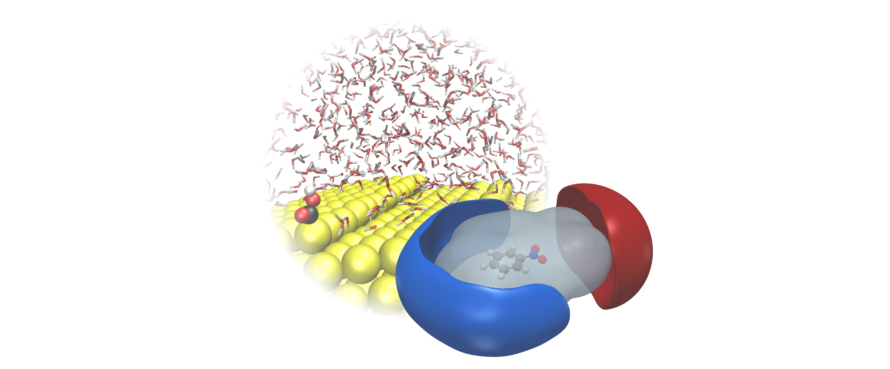

Tackling electrified interfaces using density functional theory and machine learning

Recently, a number of studies have found that electrochemical processes in batteries and electrolyzers are highly sensitive to the electrified solid-liquid interface. In order to accurately predict reaction kinetics or the stability of electrochemical system compounds, it is essential to develop methods that can model such interfaces on a quantum accuracy level. In addition, for most state-of-the-art energy systems such as carbon materials, single atom catalysts, 2D materials (MoS2, etc.) or semiconductors the effect of electrification remains largely unknown and could potentially lead to the development of new technologies. In this project, we develop and apply several computational techniques from continuum over classical approaches up to full first-principles machine learning to upscale quantum chemical calculations with Density Functional Theory towards a full representation of the solid-liquid interface and its realistic reaction environment.
Related research projects/funds:
- NRF (한국연구재단) Grant No. 2021R1C1C1008776 (신진연구)
- Institute for Basic Science (IBS) for Molecular Spectroscopy and Dynamics
Subgroup members:
Stefan Ringe, Yevhen Horbatenko, Dianwei Hou, 이세연
Saeyeon Lee, Sahar Rabet, 김주희
Juhee Kim, Shuran Xu, 최보성
Bosung Choi
Related publications 13
-
Intermaterial Hybridization as a Mechanism for Tunable Second-Harmonic Generation in Quantum Dot–Monolayer MoS2 Systems
K. J. Lee et al., J. Phys. Chem. Lett. 2026, 17, 9877–9885.
-
Machine-learning enhanced simulations predict graphene is hydrophobic and microscopically not wetting transparent
D. Hou et al., Nat. Commun. 2026, 17, 4792.
-
Atomic origins of electrochemical stability in acetate-based dual-cation water-in-salt electrolytes
S. Palchowdhury et al., J. Chem. Phys. 2026, 164, 121102.
-
Conjugated Polyelectrolytes with Tunable Ionic Side Chains for Iodide-Mediated Pt Reduction in Photoelectrochemical H2 Generation
J. M. Ha et al., Adv Energy Mater 2025, 0, e05450.
-
An implicit electrolyte model for plane wave density functional theory exhibiting nonlinear response and a nonlocal cavity definition
S. M. R. Islam et al., J. Chem. Phys. 2023, 159, 234117.
-
Cation effects on electrocatalytic reduction processes at the example of the hydrogen evolution reaction
S. Ringe, Curr Opin Electrochem 2023, 39, 101268.
-
Implicit Solvation Methods for Catalysis at Electrified Interfaces
S. Ringe et al., Chem. Rev. 2022, 122, 10777 - 10820.
-
On the importance of the electric double layer structure in aqueous electrocatalysis
S. Shin et al., Nat. Commun. 2022, 13, 174.
-
Understanding cation effects in electrochemical CO2 reduction
S. Ringe et al., Energy Environ. Sci. 2019, 12, 3001 - 3014.
-
A Two-Dimensional MoS2 Catalysis Transistor by Solid-State Ion Gating Manipulation and Adjustment (SIGMA)
Y. Wu et al., Nano Lett. 2019, 19, 7293 - 7300.
-
Generalized molecular solvation in non-aqueous solutions by a single parameter implicit solvation scheme
C. Hille et al., J. Chem. Phys. 2019, 150, 041710.
-
Transferable ionic parameters for first-principles Poisson-Boltzmann solvation calculations: Neutral solutes in aqueous monovalent salt solutions
S. Ringe et al., J. Chem. Phys. 2017, 146, 134103.
-
Function-Space-Based Solution Scheme for the Size-Modified Poisson-Boltzmann Equation in Full-Potential DFT
S. Ringe et al., J. Chem. Theory Comput. 2016, 12, 4052 - 4066.